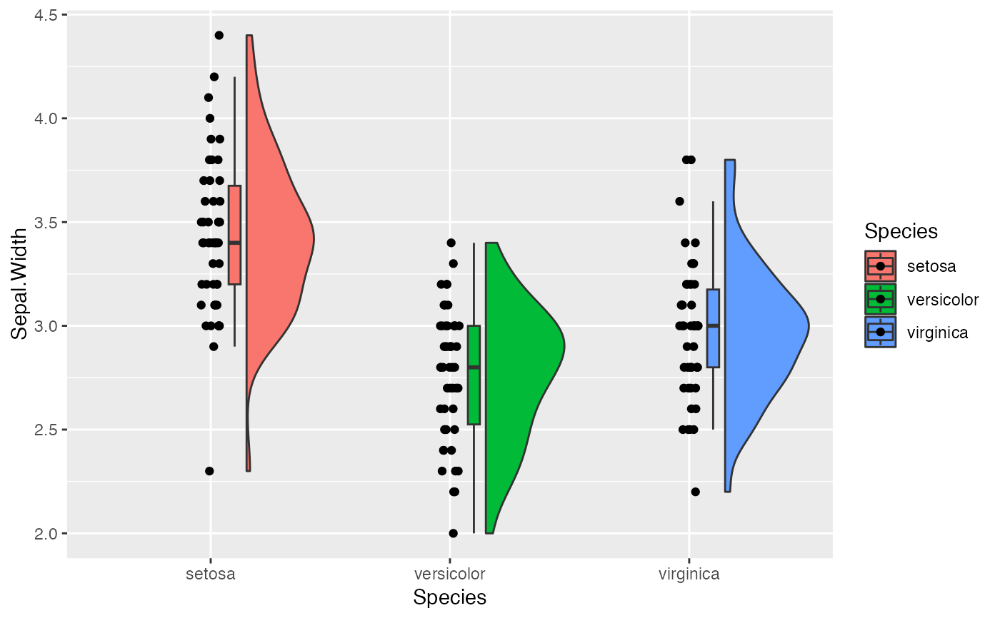
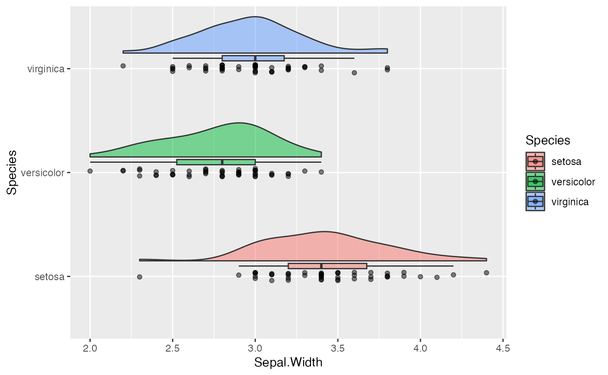
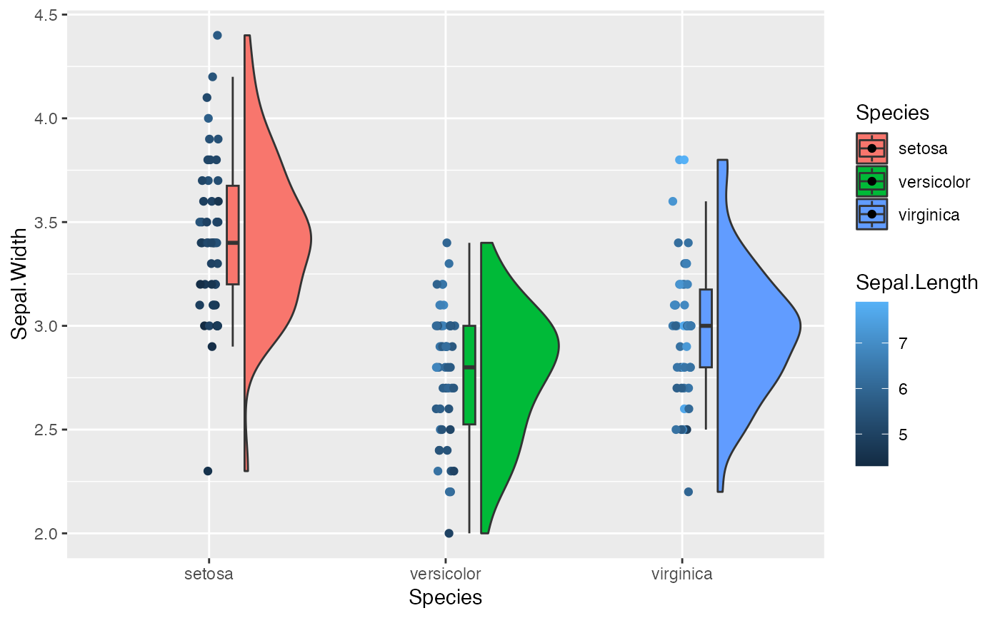
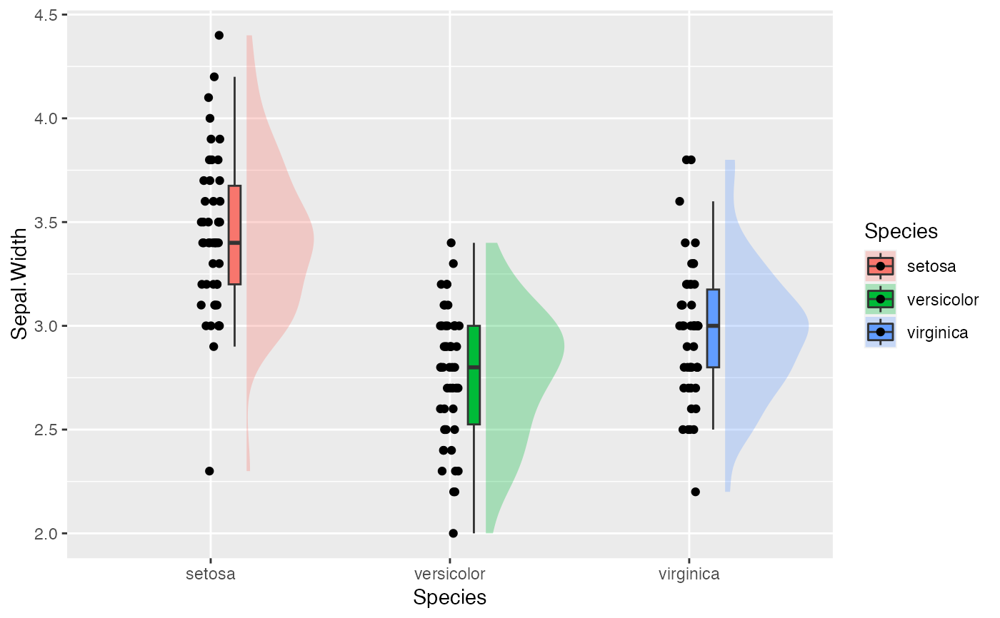
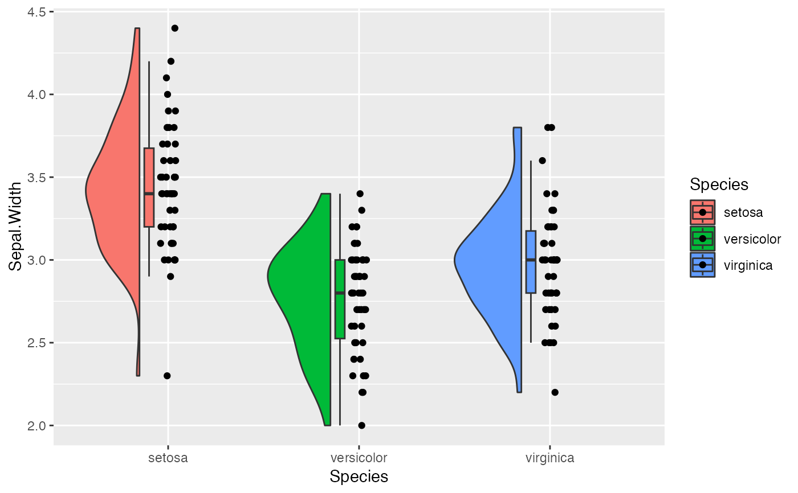
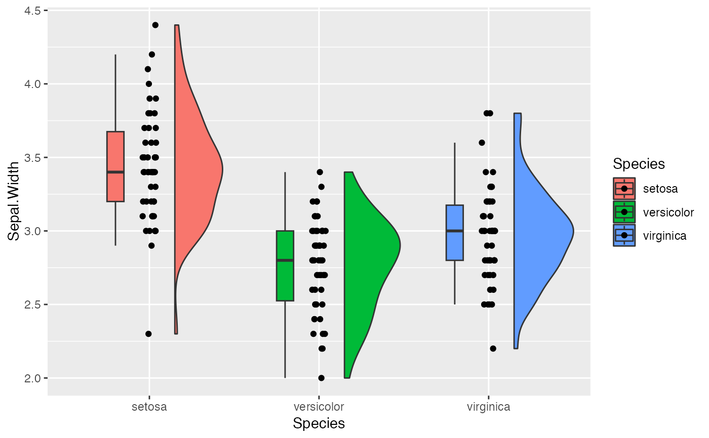
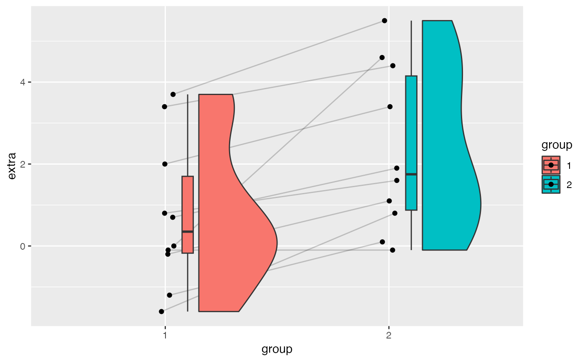
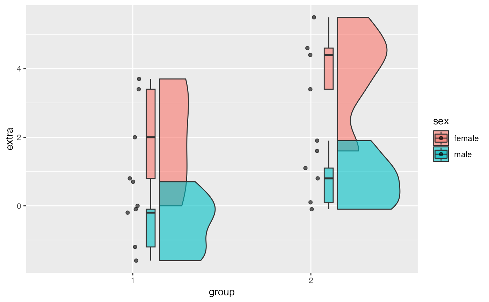
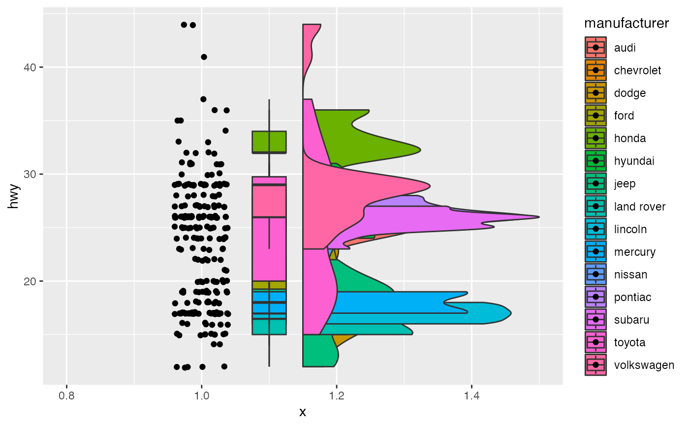
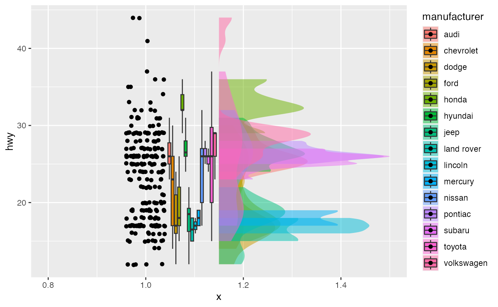

This function displays individual data points, a boxplot and half a violin plot. It also has the option to connect data points with lines across groups by specifying an id to connect by. Lastly, if desired one can color the dots based of another variable.
Usage
geom_rain(
mapping = NULL,
data = NULL,
inherit.aes = TRUE,
id.long.var = NULL,
cov = NULL,
rain.side = NULL,
likert = FALSE,
seed = 42,
...,
point.args = rlang::list2(...),
point.args.pos = rlang::list2(position = position_jitter(width = 0.04, height = 0, seed
= seed)),
line.args = rlang::list2(alpha = 0.2, ...),
line.args.pos = rlang::list2(position = position_jitter(width = 0.04, height = 0, seed
= seed), ),
boxplot.args = rlang::list2(outlier.shape = NA, ...),
boxplot.args.pos = rlang::list2(width = 0.05, position = position_nudge(x = 0.1), ),
violin.args = rlang::list2(...),
violin.args.pos = rlang::list2(side = "r", width = 0.7, position = position_nudge(x =
0.15), )
)Arguments
- mapping
Set of aesthetic mappings created by
aes(). If specified andinherit.aes = TRUE(the default), it is combined with the default mapping at the top level of the plot. You must supplymappingif there is no plot mapping.- data
The data to be displayed in this layer. There are three options:
If
NULL, the default, the data is inherited from the plot data as specified in the call toggplot().A
data.frame, or other object, will override the plot data. All objects will be fortified to produce a data frame. Seefortify()for which variables will be created.A
functionwill be called with a single argument, the plot data. The return value must be adata.frame, and will be used as the layer data. Afunctioncan be created from aformula(e.g.~ head(.x, 10)).- inherit.aes
If
FALSE, overrides the default aesthetics, rather than combining with them. This is most useful for helper functions that define both data and aesthetics and shouldn't inherit behaviour from the default plot specification, e.g.borders().- id.long.var
A group to connect the lines by - must be a string (e.g., "id").
- cov
A covariate to color the dots by - must be as a string (e.g., "cov")
- rain.side
How you want the rainclouds displayed, right ("r"), left ("l") or flanking ("f"), for a 1-by-1 flanking raincloud use ("f1x1") and for a 2-by-2 use ("f2x2").
- likert
Currently developing, right now just addes y-jitter.
- seed
For the jittering in point & line to match.
- ...
Other arguments passed on to
layer(). These are often aesthetics, used to set an aesthetic to a fixed value, likecolour = "red"orsize = 3. They may also be parameters to the paired geom/stat.- point.args
A list of args for the dots
- point.args.pos
A list of positional args for the points
- line.args
A list of args for the lines, you need to specify a group to connect them with id.long.var
- line.args.pos
A list of positional args for the lines
- boxplot.args
A list of args for the boxplot
- boxplot.args.pos
A list of positional args for the boxplot
- violin.args
A list of args for the violin
- violin.args.pos
A list of positional args for the violin
Value
Returns a list of three environments to be used with the 'ggplot()' function in the 'ggplot2' package.
If the id.long.var argument is used the output will be a list of 4 environments.
These 4 environments have a similar structure to 'geom_boxplot()', 'geom_violin()', 'geom_point()' and 'geom_line()' from 'ggplot2'. need library(rlang) need library(ggplot2) depends = ggplot2
References
Allen, M., Poggiali, D., Whitaker, K., Marshall, T. R., van Langen, J., & Kievit, R. A. Raincloud plots: a multi-platform tool for robust data visualization Wellcome Open Research 2021, 4:63. https://doi.org/10.12688/wellcomeopenres.15191.2
Examples
e1 <- ggplot(iris, aes(Species, Sepal.Width, fill = Species))
e1 + geom_rain()

# x must be the discrete variable
# orinetation can be changed with coord_flip()
e1 + geom_rain(alpha = .5) + coord_flip()

# we can color the dots by a covariate
e1 + geom_rain(cov = "Sepal.Length")

# we can edit elements individually
e1 + geom_rain(violin.args = list(alpha = .3, color = NA))

# we can flip them
e1 + geom_rain(rain.side = 'l')

# and move them
e1 +
geom_rain(boxplot.args.pos = list(width = .1, position = position_nudge(x = -.2)))

# they also work longitudinally
e2 <- ggplot(sleep, aes(group, extra, fill = group))
e2 + geom_rain(id.long.var = "ID")

# we can add groups
sleep_dat <- cbind(sleep, data.frame(sex = c(rep("male", 5),
rep("female", 5), rep("male", 5), rep("female", 5))))
e3 <- ggplot(sleep_dat, aes(group, extra, fill = sex))
e3 + geom_rain(alpha = .6)

# add likert example
e4 <- ggplot(mpg, aes(1, hwy, fill = manufacturer))
e4 + geom_rain(likert= TRUE)
#> Likert = T; setting y axis jittering for point & line to .1

# lets make it look nicer
e4 + geom_rain(likert= TRUE,
boxplot.args.pos = list(position = ggpp::position_dodgenudge(x = .095), width = .1),
violin.args = list(color = NA, alpha = .5))
#> Likert = T; setting y axis jittering for point & line to .1
